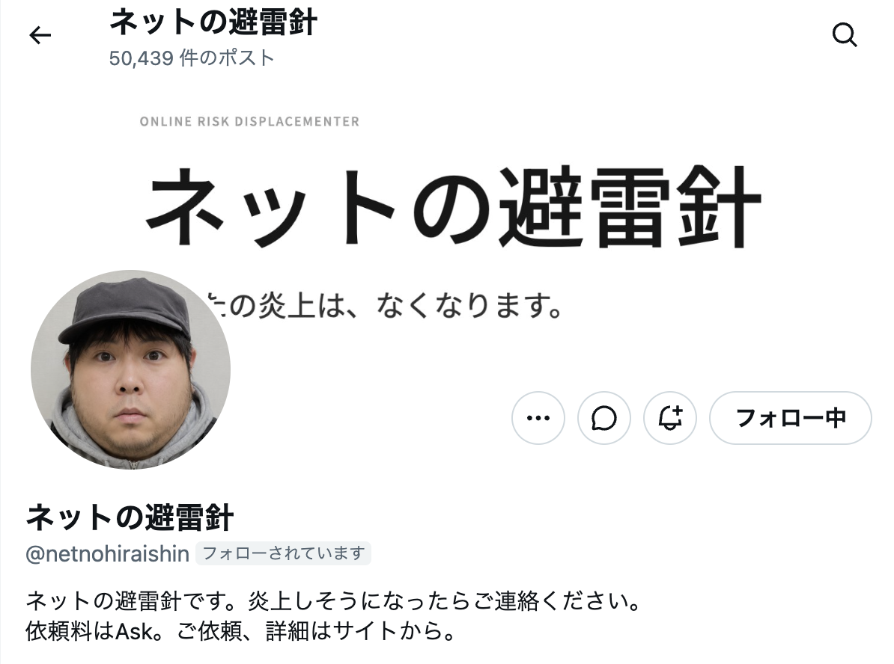

「ネットの避雷針」インタビュー 「預かるのは、怒りの矛先」SNSの闇に蠢く“炎上コンサル”が語る現代ネットの業
SNSでの一言が瞬く間に拡散され、個人や企業の人生を狂わせる「ネット炎上」。現代の社会問題とも言えるこの現象の裏で、まことしやかに囁かれる都市伝説がある。
どれだけ激しく炎上していても、あるアカウントにDM（ダイレクトメッセージ）を送ると、まるで魔法のように別の話題へ火が移り、元の炎上が急速に鎮火するというのだ。
アカウント名は「ネットの避雷針」。
アイコンにはごく普通の男性の顔写真が設定されているが、その正体は一切不明。先日の有名インフルエンサーによる失言騒動や、某IT企業のインサイダー疑惑の炎上未遂の裏に、彼がいたのではないかと噂されている。
今回、徹底的な匿名性とオンライン通話のみという条件で、独占インタビューに成功した。画面の向こうから聞こえる変声機を通した声は、どこかこちらを小馬鹿にしたような、軽い調子だった――。

「裏で燃料を投下してる？」
企業秘密ということで
――ネット上では、あなたが介入することで「炎上の標的をすり替えている」という噂があります。具体的にどうやって流れを変えているのですか？
あはは、標的のすり替え？ですか。ネットの皆さんって本当に陰謀論が好きですよね。そんな神様みたいなことできるわけないじゃないですか……って思いますか？はは。ノーコメントでおねがいします。
『裏で別の炎上燃料を投下してるんじゃないか』なんて言う人もいますけど、まあ、それが正しいかどうかは企業秘密、ということで。
――具体的な手法は明かせないと。しかし、あなたが介入したと噂される案件では、不自然なほど急激に人々の関心が別の話題に移っています。
ネットの怒りなんてそんなものですよ。みんな、誰かを叩いてスカッとしたいだけ。ターゲットなんて誰でもいいんです。目の前に新しい『 おもちゃ 』が現れたら、そっちに飛びつく。その手伝いをしているだけです。
ネットで誰かを叩いてる人たちに
道徳なんてあります？
――ですが、もしその噂が本当だとしたら、あなたの依頼者が助かる代わりに、別の誰かがいわれのない批判を浴びることになりますよね。それは道徳的に問題があるとは思いませんか？
道徳（笑）。そもそもネットで正義の味方を気取って誰かを叩き潰している人たちに、道徳なんてあります？ 彼らはただ、自分の退屈な日常のストレスをぶつける生贄を探しているだけ。そう、生贄なんです。
誰かが傷つく、と言われましてもね。元々の依頼者だって、ただの言葉のあやとか、ちょっとした勘違いで人生狂わされそうになっていたわけですし。叩く側が勝手に新しい標的に飛びついているだけなんですから、お互い様じゃないですかね。
炎が燃え広がる瞬間って
いつ見ても美しい
――ご自身がネットの攻撃対象、つまり本当の意味での「避雷針」になるリスクもあるわけですよね。なぜわざわざ、そんな活動を？
僕からの「愛」だと思ってくれて結構です。かなり歪んだ愛情ですけどね（笑）。
とにかくインターネットが大好きなんですよ。炎上は止まらない。ならば、どうすればいい？ そんなインターネットが持続的に生きながらえるためのひとつのアプローチが「ネットの避雷針」なのかなと思ってます。
――それはご自身の自己犠牲の精神の現れ、ということですか？
そんな大層なものじゃないです。ただ、雷が落ちる瞬間、炎が燃え広がる瞬間って、いつ見ても美しいなとは思ってるだけです。
インタビュー中、彼は終始、ネット社会を冷笑するような態度を崩さなかった。
しかし、彼が語った「叩ければ対象は誰でもいい」というネットの現実は、皮肉にも現代の歪んだ空気感を的確に射抜いているようでもあった。
画面の向こうの「避雷針」は、最後に「まあ、皆さんも炎上しそうになったら、いつでもDMくださいね。火あぶりにされそうなウサギちゃん♪」と言い残し、無造作に通話を切った。